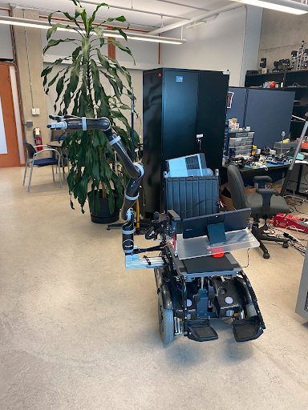
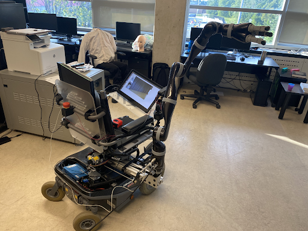
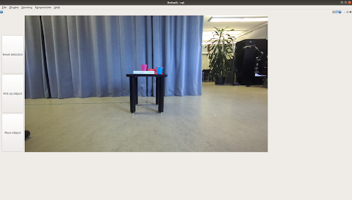
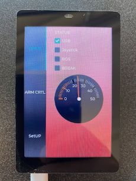

This project addressed a core accessibility challenge: individuals using wheelchairs often lack the ability to independently reach and retrieve objects in their environment. To address this, I worked on an assistive robotic system consisting of a wheelchair-mounted 7-DOF Kinova arm, a ZED 2 stereo camera for perception, and a multi-layered user interface. The system was designed to translate user intent into autonomous manipulation by combining real-time RGB-D perception, intuitive object selection, and coordinated motion execution within a unified ROS-based architecture.


Left: Front view of the wheelchair-mounted robotic system · Right: Back view showing the wheelchair
System Design
I implemented perception-driven interaction workflows for an assistive robotic platform integrating stereo vision, embedded control, and robotic manipulation. The system was built around a ZED 2 stereo camera and a 7-DOF Kinova arm, with software designed to bridge raw sensor data, user input, and autonomous execution. My work focused on processing RGB-D data to construct a usable scene representation, designing interfaces for user-guided object selection, and integrating these perception outputs into a ROS-based manipulation pipeline. This required coordinating multiple subsystems—vision, user interface, and control—under real-time constraints while ensuring robustness for physical interaction tasks where perception noise and latency directly impact execution.
System Design
I developed perception modules around the ZED 2 stereo camera to generate depth-aware representations of the environment suitable for interaction. This involved working with synchronized RGB and depth streams to produce spatially meaningful outputs that could be consumed both by the user interface and downstream manipulation components. These representations were exposed through a visualization layer that allowed users to directly interact with the scene and select target objects. Once selected, targets were translated into actionable inputs for the manipulation stack, including position estimates in the robot’s frame and task-level commands that could be executed by the Kinova arm. Care was taken to ensure that the perception outputs were stable and interpretable, as inconsistencies at this stage would propagate directly into manipulation errors.
The system used a dual-interface architecture to separate low-level control from high-level task execution, improving both usability and system safety. An embedded STM32-based interface provided direct access to arm control and system state, enabling deterministic, low-latency interaction for manual operation and debugging. In parallel, a tablet-based interface exposed higher-level functionality, allowing users to interact with the perceived environment and issue task-level commands such as object selection and retrieval. This separation allowed the system to support both autonomous and manual workflows without overloading a single interface, while also providing a reliable fallback path in the event of perception or planning failures.
I developed a custom operator interface using RQT that interfaced directly with ROS topics and services, allowing tight integration with the rest of the system. The interface was responsible for visualizing perception outputs, handling user input for object selection, and providing feedback on robot state and execution progress. By leveraging RQT, I was able to rapidly prototype and iterate on the interface while maintaining compatibility with the ROS ecosystem. The design avoided unnecessary abstraction layers, enabling direct communication with the underlying nodes and minimizing latency between user input and system response, which was critical for maintaining a responsive interaction loop.


Left: RQT interface for object selection and manipulation · Right: View of the microcontroller interface
Technical Stack
The overall system was structured using ROS to modularize perception, interface, and control components into independent but coordinated nodes. I designed the communication architecture using a combination of topics and services to handle continuous data streams and discrete command execution. Perception data from the ZED 2 was streamed to both the visualization interface and processing nodes, while user-selected targets were transmitted as task-level commands to the manipulation subsystem. This architecture enabled asynchronous operation across components while preserving synchronization where required for execution, allowing the system to remain responsive even as multiple subsystems operated concurrently.
The end-to-end manipulation pipeline was structured to abstract low-level robotic control into a user-friendly, task-driven workflow. The system first captured RGB-D data from the ZED 2 and generated a scene representation suitable for interaction. The user then selected a target object through the interface, which was converted into a task-space goal for the robotic arm. This goal was passed to the Kinova arm’s control stack, which executed a reach-and-grasp motion to retrieve the object. By structuring the pipeline in this way, the system eliminated the need for users to manually control individual joints, instead allowing them to operate at the level of intent. This significantly improved usability while still relying on precise coordination between perception, planning, and control to ensure successful execution.
Impact
This system demonstrated how perception-driven interfaces can reduce the complexity of robotic manipulation for assistive applications. A key takeaway was that system performance is not solely determined by perception or control accuracy—effective interface design is critical for translating user intent into reliable robotic action in real-world environments.